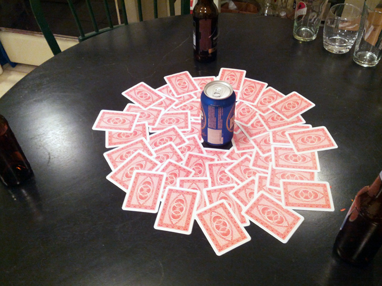

Kings (D2M Style).
Amount of Players: 4+
Difficulty: 4/7
Drunk Scale: 4/7
Our Version of the classic game - Kings.We realize everyone has their own way of playing, but check these rules out. You never know, you might adopt a few
| 1. | Set up kings as you normally would, or if you're not a pussy, place the cards around the center cup in a flower petal fashion. It looks nice and impresses the ladies. |
| 2. | For newbies: Each player takes a turn (going clockwise) picking a card from the pile, then must follow the rule associated with the card. |
| 3. | Two = You - Tell someone to drink |
| 4. | Three = Me - Take a drink |
| 5. | Four = Whores - All women drink |
| 6. | Five = Doesn't Rhyme so it doesn't matter - Last person to place their thumb on the table, drinks |
| 7. | Six = Dicks - All men drink |
| 8. | Seven = Heaven - Last person to point to the sky / ceiling drinks |
| 9. | Eight = Mate - Choose another person that will drink whenever you do |
| 10. | Nine = Rhyme - Say a word that the others must rhyme with. The player on the left goes, and so on. No words are allowed to be repeated. If anyone hesitates for more than a second or two the rhyme is over and they must drink. |
| 11. | Ten = Categories - Choose a category from which every person on the table must name something from. Ex. Colors! "green" "red" "blue", etc. |
| 12. | Jack = Make a Rule - Create a Rule. This rule is in place for the rest of the game. If another Jack is drawn, the player may either choose to abolish the rule or add another one. The Rules are stackable, so there may very well be four rules at the end of the game. |
| 13. | Queen = Question Master - The game continues as usual, but the table conversation that will surely be on going will be tainted by the Question Master's presence. If the Question Master asks a player a question and they answer with anything but another question, they must drink. |
| 14. | King = Social OR Never Have I ever - Social simply means everyone drinks. Never Have I Ever is self-explanitory and recommended only when playing with other players of the opposite sex. |
| 15. | Ace = Waterfall - All players stand (or at least stop slouching like a chump) and raise their glasses. Cheers it up for good measure, then the player who pulled the Ace starts chugging. All other players follow suit. All players cannot stop drinking until the player to their right does. So if you're last, you're getting wasted! |
| 8. | Person to flip the fourth king loses and must finish the drink in the center cup. |